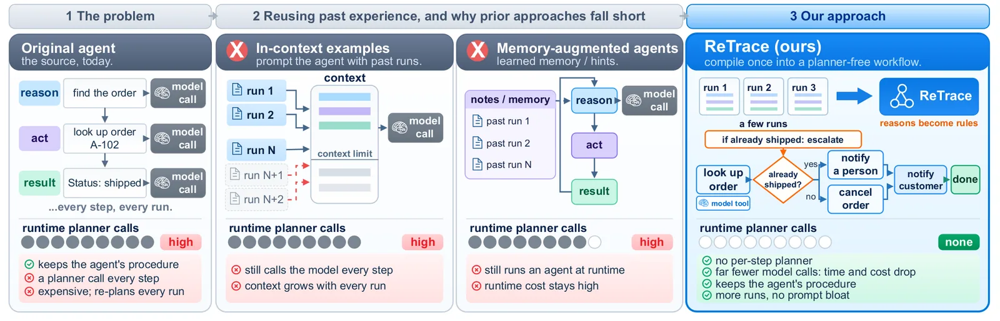
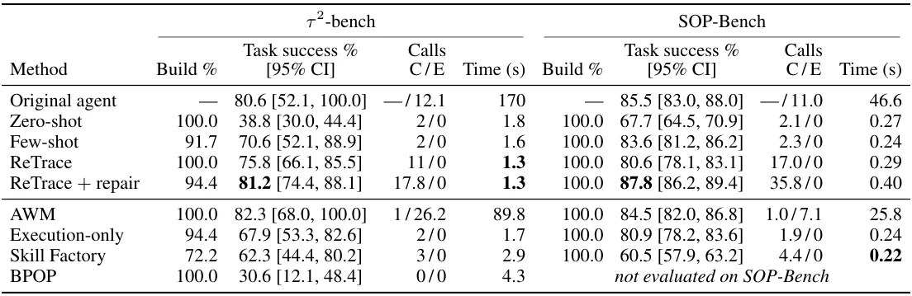
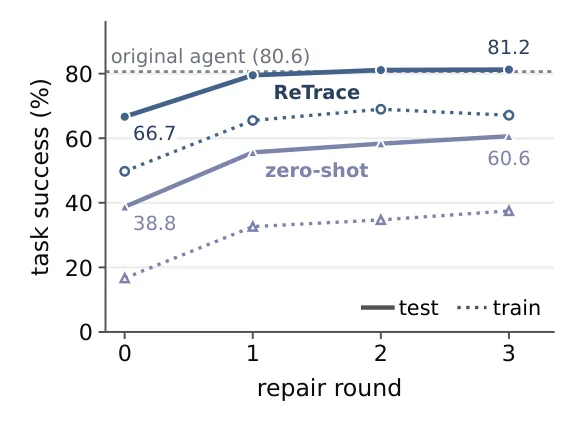

O Custo Oculto do Planejamento Dinâmico
A automação de processos de negócios tradicionais envolve a execução repetitiva de Procedimentos Operacionais Padrão (SOPs) sobre novos inputs. Historicamente, isso era feito construindo workflows manualmente, conectando ferramentas e ramificações em código. Recentemente, Agentes baseados em Grandes Modelos de Linguagem (LLMs) surgiram como uma alternativa, onde um proprietário de processo escreve um SOP em linguagem natural e o agente lê e executa as etapas, chamando ferramentas conforme necessário.
O problema fundamental dessa abordagem é o custo de runtime. Para cada execução, o agente precisa chamar o LLM para decidir qual passo seguir, rotear dados e transformar informações. Em alta escala, essa latência e o custo por token se tornam proibitivos. Em nossa plataforma de automação empresarial, analisamos 5.115 automações criadas entre abril e junho de 2026. Embora 91,8% fossem agentes que planejam em tempo de execução, as sete automações mais frequentemente executadas eram workflows fixos. Para procedimentos com três a cinco ferramentas, a escolha do próximo passo consumia 37–43% do tempo de execução, além do custo de tokens.
Essa discrepância entre o que os usuários criam (agentes flexíveis) e o que é executado em escala (workflows fixos) motiva a necessidade de uma ponte entre as duas abordagens. Se um procedimento é executado milhares de vezes, construir um workflow uma vez e reutilizá-lo paga o custo inicial de construção. Estimativas sugerem que a construção se paga após cerca de 75 execuções, enquanto alguns workflows executaram centenas de milhares de vezes em três meses.
A Ideia Central: Distilação de Raciocínio
O ReTrace propõe transformar um SOP e algumas execuções logadas de um agente (traces) em um workflow reutilizável onde o código, e não o LLM, seleciona o próximo passo. A inovação não está apenas em extrair as chamadas de ferramenta, mas em extrair a lógica condicional por trás delas.
Traces de agentes comuns mostram a sequência de ações: 'chamar ferramenta X', 'chamar ferramenta Y'. No entanto, as chamadas de ferramenta sozinhas não explicam por que a ação foi tomada. O raciocínio (reasoning) que o agente gera antes de agir frequentemente contém a justificativa, como 'o pedido já foi enviado, portanto escalar para humano'. O ReTrace utiliza esse raciocínio para inferir as condições que levam a cada decisão.
O processo começa coletando traces que incluem tanto as ações quanto o texto de raciocínio. Em seguida, o sistema extrai as condições, as ferramentas e as fontes de entrada por trás de cada passo. Essas condições são mescladas através de múltiplas execuções para formar um documento de regras compacto. Cada regra é vinculada à sua evidência (o trace específico que a gerou), permitindo auditoria e depuração.

Metodologia: Das Traces ao Workflow Executável
O pipeline do ReTrace opera em três fases principais. Primeiro, a extração de regras. Os autores combinam o raciocínio do agente com seus registros de ferramentas para recuperar condições de ação, fontes de entrada e alternativas que não foram executadas em nenhum trace logado. Isso é crucial porque um trace pode não cobrir todos os cenários de erro ou sucesso, mas o raciocínio do agente pode sugerir como lidar com eles.
Segundo, a geração do documento de regras. As condições extraídas são consolidadas em um documento único. Este documento atua como uma especificação intermediária. Ele não é dependente de plataforma, o que significa que a mesma lógica pode ser compilada para diferentes orquestradores. A única etapa que depende da plataforma é a geração final do código executável.
Terceiro, a compilação para workflow. O documento de regras é traduzido para código executável. No τ²-bench e no SOP-Bench, isso resultou em código Python. Na plataforma interna da Amazon, resultou em grafos de workflow tipados. Em tempo de execução, o código avalia as condições para decidir o próximo passo. Se uma ferramenta ainda precisar de um LLM (por exemplo, para classificar um documento), a chamada ocorre, mas o roteamento do fluxo de trabalho é determinístico e rápido.
Por que o Raciocínio é Crítico?
Um ponto central do paper é a distinção entre ações observadas e lógica inferida. Se um agente olha up um pedido e depois escala para um humano, o trace mostra apenas a sequência. Sem o raciocínio, não sabemos se a decisão foi baseada no status de envio ou em outro fator. O ReTrace depende do fato de que o agente escreveu uma explicação clara.
Os autores notam que fornecer mais traces brutos não é suficiente. Com muitos traces longos, o gerador de workflow pode acabar escrevendo código pior, devido ao ruído e à redundância. O raciocínio serve como um filtro semântico que agrupa comportamentos similares sob regras gerais. No entanto, isso introduz uma dependência: se o raciocínio do agente for enganoso ou incompleto, as regras derivadas serão falhas.
O sistema também lida com a ambiguidade. Quando diferentes traces sugerem condições conflitantes, o documento de regras precisa resolver essas contradições. O ReTrace mantém o vínculo com a evidência original, permitindo que desenvolvedores vejam por que uma regra foi gerada e se ela é válida para novos inputs.
Resultados: Velocidade e Custo
Avaliamos o ReTrace em três contextos: 79 procedimentos da plataforma de produção da Amazon, o benchmark τ²-bench e o SOP-Bench. Nos procedimentos internos, os workflows ReTrace alcançaram 93,8% de conclusão, contra 96,8% para o agente original, mas com 24% de custo menor por tarefa. A perda de precisão é pequena comparada à economia de custo.
No τ²-bench, a diferença de desempenho é mais visível em termos de tempo. Os workflows ReTrace alcançaram 75,8% de sucesso na tarefa, enquanto o agente alcançou 80,6%. No entanto, o tempo de execução caiu de 170 segundos para 1,3 segundos por tarefa. Essa é uma redução de mais de dois ordens de magnitude, tornando o ReTrace viável para aplicações que exigem baixa latência.
Os gráficos de tempo de execução mostram que o ReTrace mantém um tempo consistente abaixo de 2,5 segundos, independentemente da profundidade da tarefa (número de chamadas de ferramenta). Em contraste, o tempo do agente cresce linearmente com a complexidade, pois cada passo requer uma nova inferência do LLM.

Reparo Iterativo e Ajuste Fino
O sucesso inicial do ReTrace não é perfeito. No τ²-bench, com k=2 workflows (pequeno conjunto de traces de treinamento), o sucesso era de 66,7%. No entanto, o sistema suporta um processo de reparo. Ao usar falhas de treinamento rotuladas para corrigir as regras, três rodadas de reparo elevaram o sucesso para 81,2%, superando ligeiramente o agente.
Esse mecanismo de reparo é essencial para a adoção prática. Ele permite que o workflow seja refinado com base em erros reais, sem a necessidade de retreinar o modelo ou chamar o LLM para planejamento. O custo de gerar o workflow é amortizado, e o ajuste fino é feito via código ou configuração de regras, que é mais barato e rápido do que inferência.
No SOP-Bench, a situação é diferente. Sem reparo, o ReTrace fica atrás da geração few-shot (80,6% vs 83,6%). Com reparo, ele atinge 87,8% a 0,40s por tarefa, enquanto o agente leva 46,6s. Isso demonstra que, para tarefas mais curtas e simples, a distilação é extremamente eficiente, mas requer um conjunto de treinamento representativo para alcançar alta precisão.

Limitações e Riscos
O ReTrace tem limitações claras. Primeiro, ele depende da qualidade do raciocínio do agente. Se o agente toma decisões por motivos errados ou não os explica, as regras derivadas serão incorretas. O sistema verifica se o código gerado carrega corretamente e se reproduz os passos logados, mas não verifica se as condições recuperadas são semanticamente corretas para novos inputs.
Segundo, a generalização é limitada. A avaliação cobre apenas novos inputs para os mesmos procedimentos, não a transferência para novos procedimentos. Se o SOP ou as ferramentas mudarem, o workflow precisa ser reconstruído. Isso não é uma vantagem em cenários dinâmicos onde as regras de negócio mudam frequentemente.
Além disso, a coleta de traces é crucial. Os autores escolheram traces aleatoriamente, o que pode não cobrir todos os ramos do fluxo de trabalho. Em um procedimento do SOP-Bench, os resultados variaram em até 50 pontos dependendo da amostra de traces usada. Misturar traces de sucesso e falha ajuda, mas não é garantido. A seleção de traces que cobrem diferentes cenários é um passo manual ou semi-automático importante.
Considerações Éticas e de Segurança
Os autores destacam riscos éticos. Traces de agentes podem conter informações sensíveis. Na avaliação interna, apenas resultados agregados foram relatados. A reutilização de um workflow pode amplificar erros ou decisões injustas. O código baseado em seleção de passos não remove vieses presentes no agente original ou no SOP.
Além disso, a eficiência do ReTrace pode incentivar a automação em larga escala de processos que antes eram humanos, potencialmente levando à coleta não autorizada ou uso de dados sensíveis. A avaliação não mediu diferenças nas taxas de erro entre grupos de usuários, o que é uma lacuna importante para auditorias de justiça algorítmica.
Os autores recomendam que os proprietários do workflow revisem as condições recuperadas e restrinjam o acesso às ferramentas. Isso é especialmente importante porque o mesmo automação pode escalar rapidamente, afetando milhares de usuários.
Conclusão: Quando Usar ReTrace?
O ReTrace oferece uma solução pragmática para automação de alto volume. Para procedimentos que rodam milhares de vezes, a economia de tempo e custo é significativa. A redução de 170s para 1,3s no τ²-bench é um argumento forte para adoção em cenários de baixa latência.
No entanto, não é uma solução mágica. Ela exige investimento inicial em coleta de traces e reparo de regras. Para processos que mudam frequentemente ou que exigem alta flexibilidade, o agente original pode ser preferível. O ReTrace é ideal para SOPs estáveis e bem definidos, onde a consistência e a velocidade são mais importantes do que a capacidade de lidar com cenários nunca vistos.
O paper abre caminho para futuras pesquisas em verificação automática de condições recuperadas e seleção inteligente de traces para cobrir o espaço de estados do workflow. Enquanto isso, para equipes de engenharia que buscam otimizar custos de LLM, o ReTrace é uma ferramenta valiosa no arsenal de automação.
O que fica
- ReTrace converte o raciocínio de agentes em regras de código, eliminando chamadas de LLM para planejamento em runtime.
- Redução drástica de tempo: de 170s para 1,3s por tarefa no τ²-bench, com custo 24% menor em produção.
- O método depende criticamente da qualidade do 'raciocínio' gerado pelo agente; traces ruins levam a regras ruins.
- Workflows compilados são mais rápidos, mas exigem manutenção manual se as regras de negócio mudarem.
Paper original: ReTrace: Distilling Tool-Using Agents into Planner-Free Workflows
Comentários
Nenhum comentário ainda. Seja o primeiro.